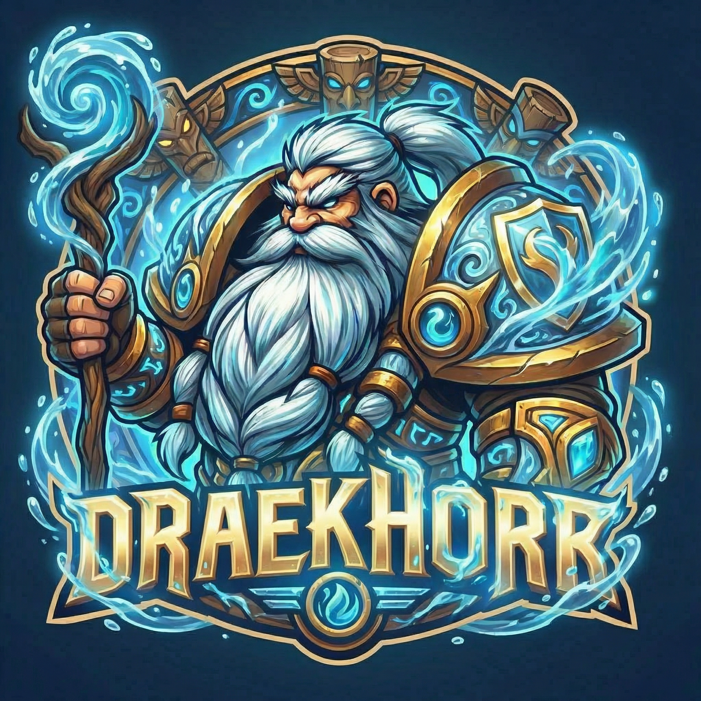

COLLECTED MOUNTS
EU • DRAENOR • WORLD OF WARCRAFT
EVERY LEGEND
HAS A STORY.
A chronicle of rare treasures, legendary mounts and hard-earned achievements.
EXPLORE THE LEGACY ↗
01 / THE COLLECTION
A LEGACY IN NUMBERS
ACHIEVEMENT POINTS
RARE MOUNT HIGHLIGHTS
02 / THE STABLES
MOUNTS OF LEGEND
03 / HALL OF GLORY
EARNED, NEVER GIVEN
04 / RAID LEGACY
CUTTING EDGE & RAID TIERS
CUTTING EDGE ACHIEVEMENTS
RAID TIERS CLEARED WITH CUTTING EDGE
RAIDER.IO MYTHIC+ SCORE
Cutting Edge is earned for defeating a raid's final boss on Mythic difficulty while the achievement is obtainable. The tier count below is calculated from verified Cutting Edge achievements, not from unverified raid clears.